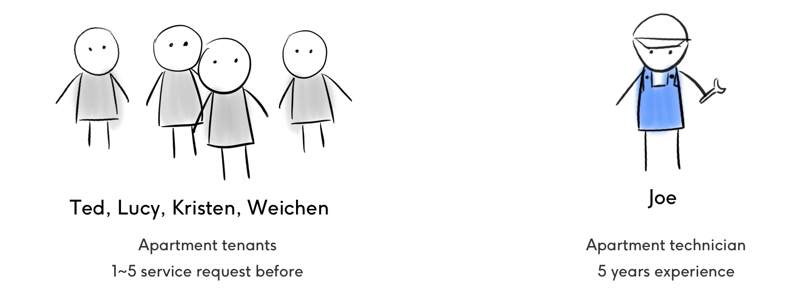
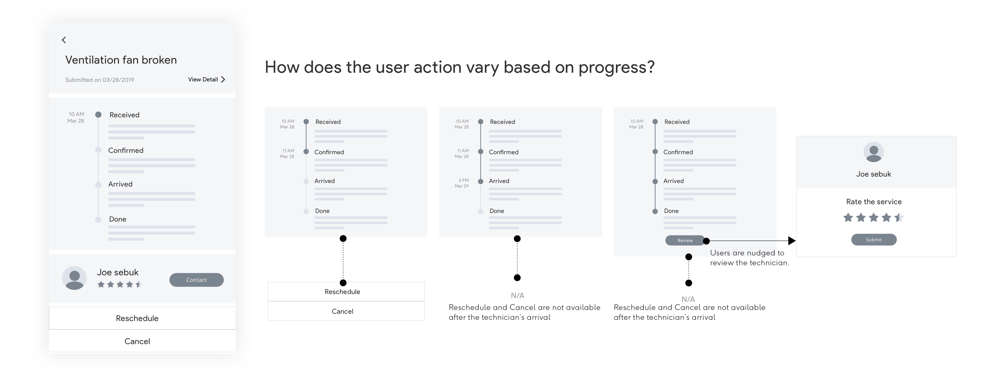
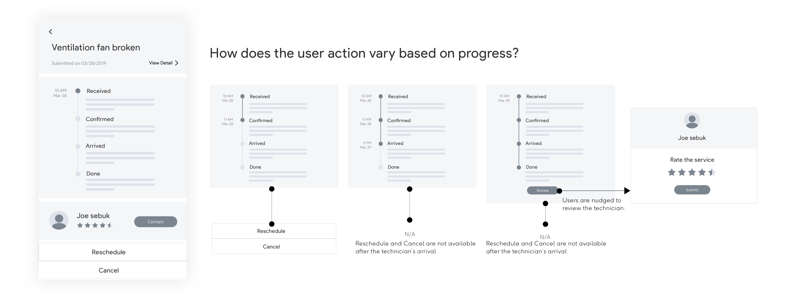
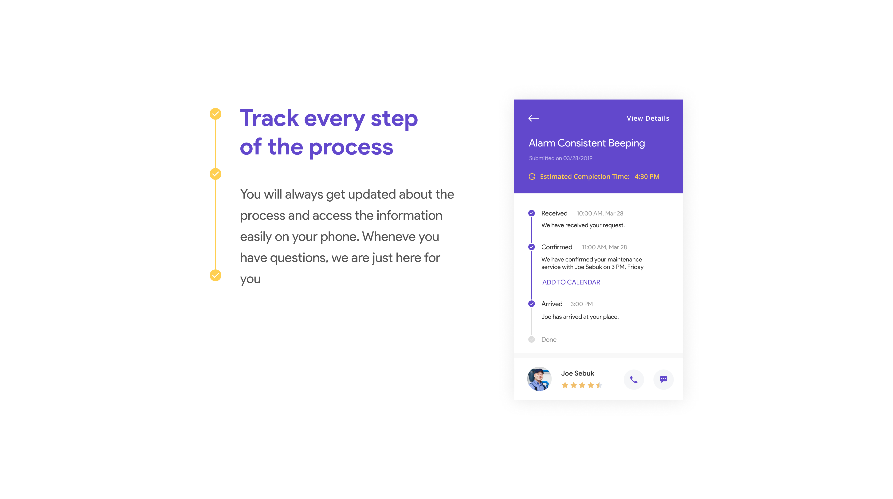
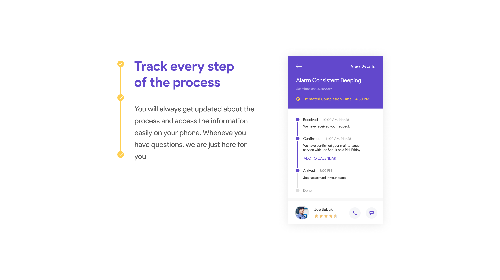

USER RESEARCH
Residents and maintenance technicians, both matters
Though the residents are the main users of my app, the staff' experience also matters because they are directly involved in the process. I talked to 4 tenants who have requested home maintenance before, and a property maintenance technicion with 5 years experience.

 

 
